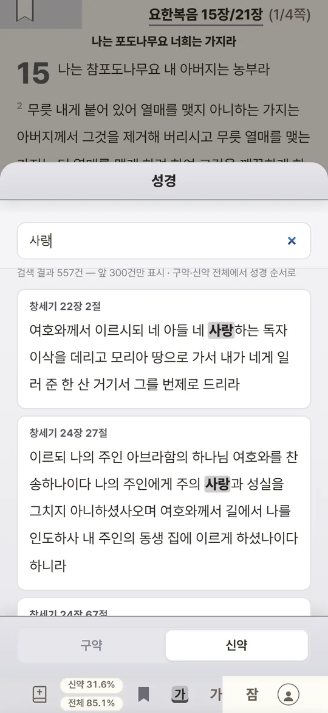
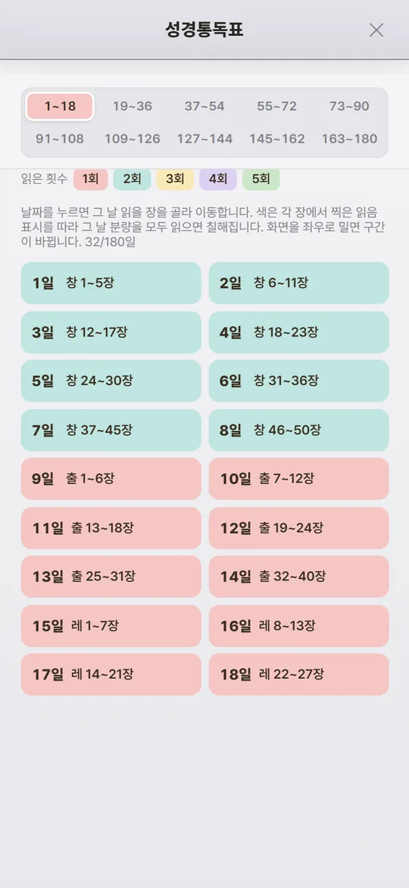
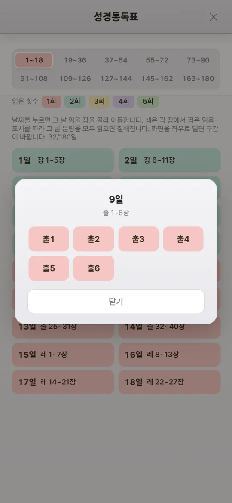
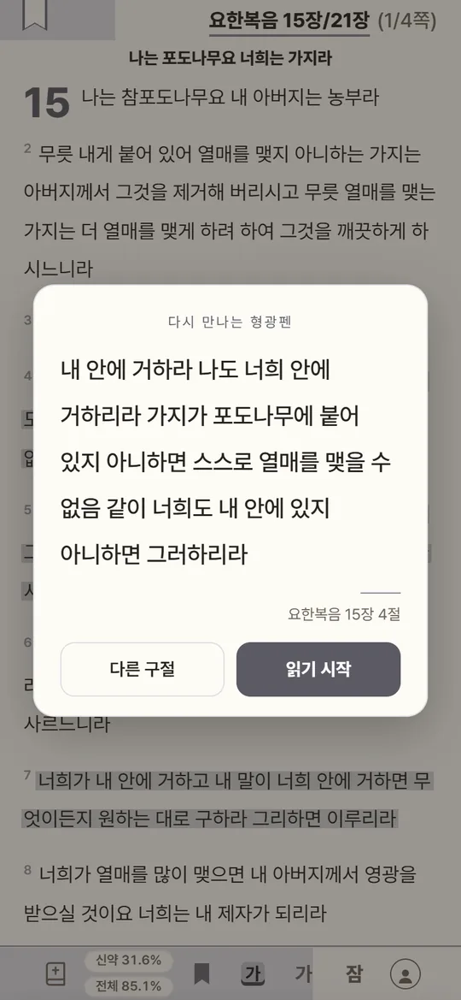
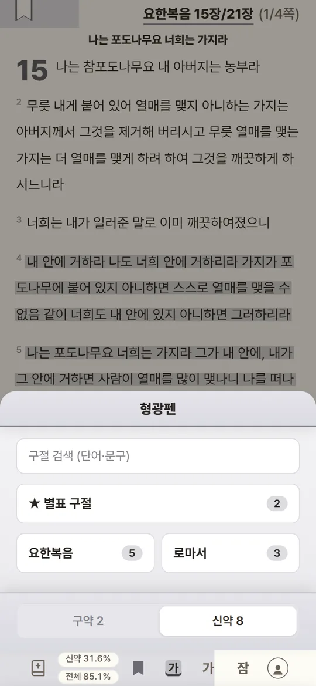
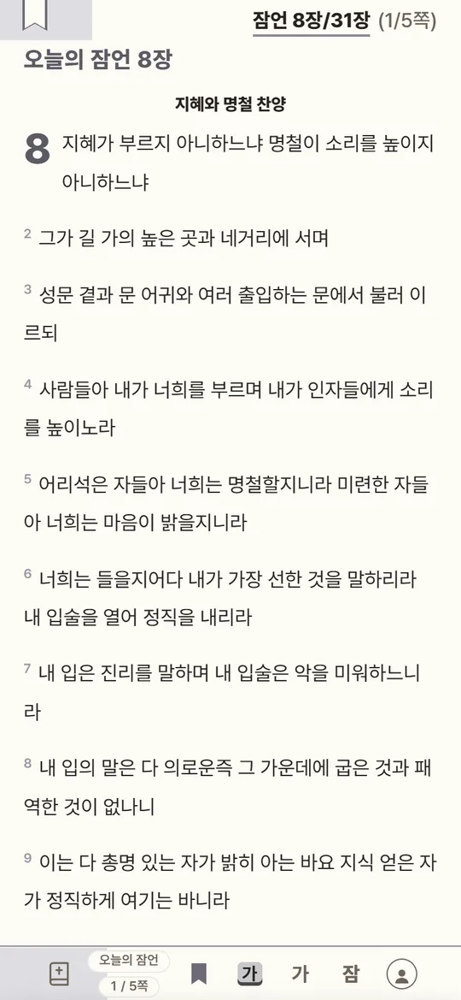
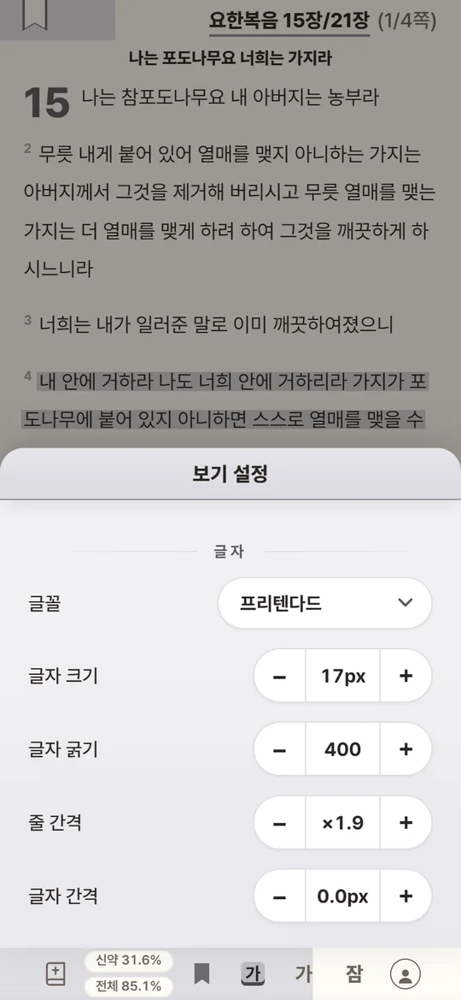

성경 전체 검색
낱말 하나로 66권 전체를 찾아요. 띄어 쓰면 여러 낱말을 한꺼번에. 찾은 곳을 누르면 그 절로.
180일 성경통독 · 개역개정
오늘 읽을 본문이 한 번에 열리고, 책장을 넘기듯 읽습니다.
칠한 형광펜과 읽은 기록은 폰 · 태블릿 · PC 어디서든 이어져요.
가입하지 않아도 바로 읽을 수 있어요. 로그인하면 기록이 모든 기기에 이어집니다.
읽던 곳에서 이어 읽기 ·
180일 성경통독01
책을 찾고, 장을 찾고, 어디까지 읽었는지 기억할 필요가 없어요. 180일 통독표에서 날짜만 누르면 됩니다.


읽는 화면02
끝없이 내리는 화면이 아니라 책처럼 쪽을 넘겨요. 손가락 하나로, 눈은 본문에만.
형광펜 · 별표03
마음에 닿은 절을 톡 누르면 형광펜이 칠해져요. 칠한 구절은 그냥 쌓이지 않고 다시 찾아옵니다.


찾기 · 펼치기 · 내 눈에 맞게04

낱말 하나로 66권 전체를 찾아요. 띄어 쓰면 여러 낱말을 한꺼번에. 찾은 곳을 누르면 그 절로.

‘잠’ 버튼을 누르면 오늘 날짜의 잠언 장이 열려요. 8일엔 8장, 31일엔 31장. 한 달이면 잠언 한 권.

글꼴 다섯 가지(프리텐다드 · 본명조 · 바탕 · 나눔명조 · 마루부리)와 글자 크기 · 굵기 · 줄 · 글자 · 절 간격 · 여백까지. 흑백 전자책에서도 잘 보여요.
올리브바스켓과 연결05
형광펜 구절을 꾹 누르고 ‘올리브 담기’를 고르면, 별 한두 개를 매겨 올리브바스켓에 담겨요. 올리브바스켓은 담아 둔 문장을 열 때마다 한 줄씩 다시 보여 주는 웹이에요. 읽은 말씀이 하루에 한 번씩 다시 찾아옵니다.
올리브바스켓에도 가입해 두면 같은 기기에서 바로 담겨요.
올리브바스켓 보기우리가 알거니와 하나님을 사랑하는 자 곧 그 뜻대로 부르심을 입은 자들에게는 모든 것이 합력하여 선을 이루느니라
 올리브바스켓에
올리브바스켓에앱처럼 쓰기07
앱스토어를 거치지 않아요. 브라우저로 열고 홈 화면에 추가하면, 아이콘을 누를 때 바로 성경이 열려요.